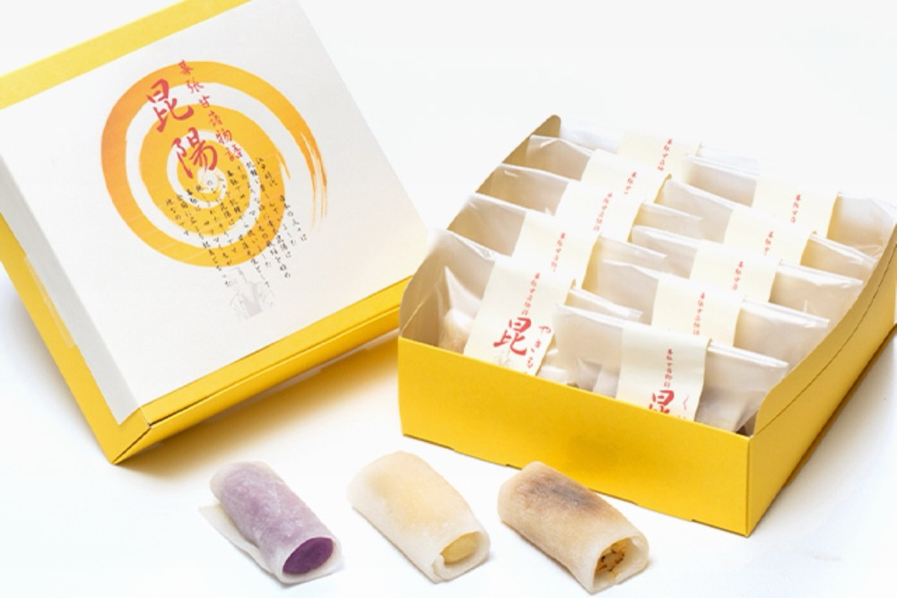
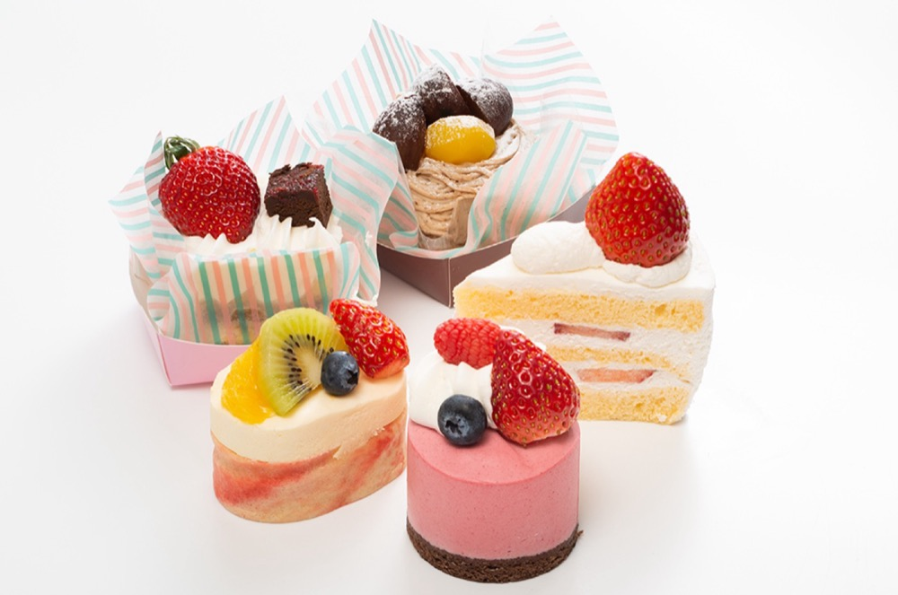
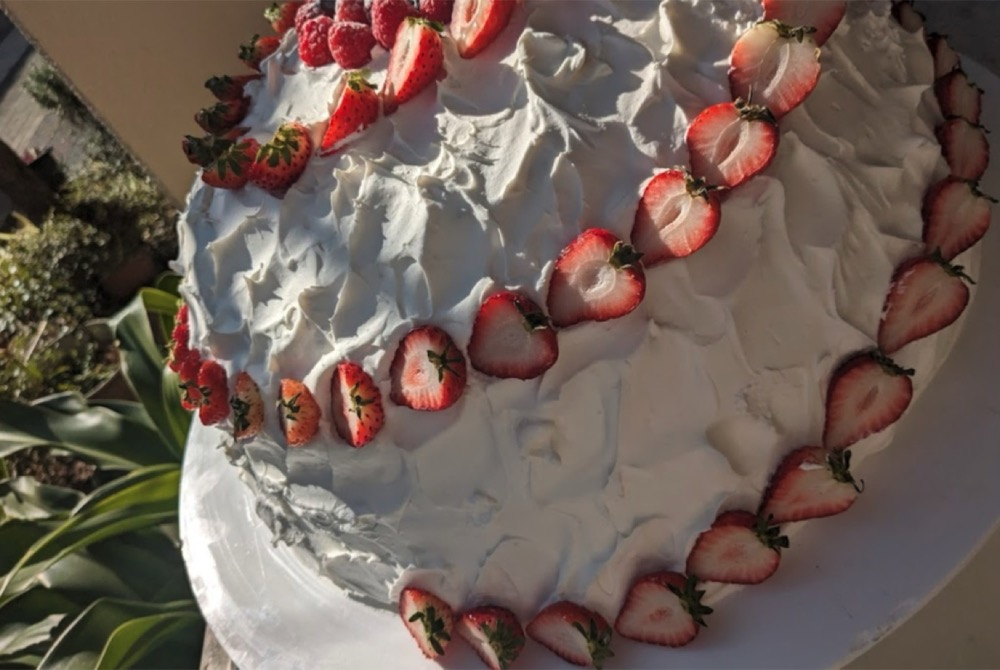
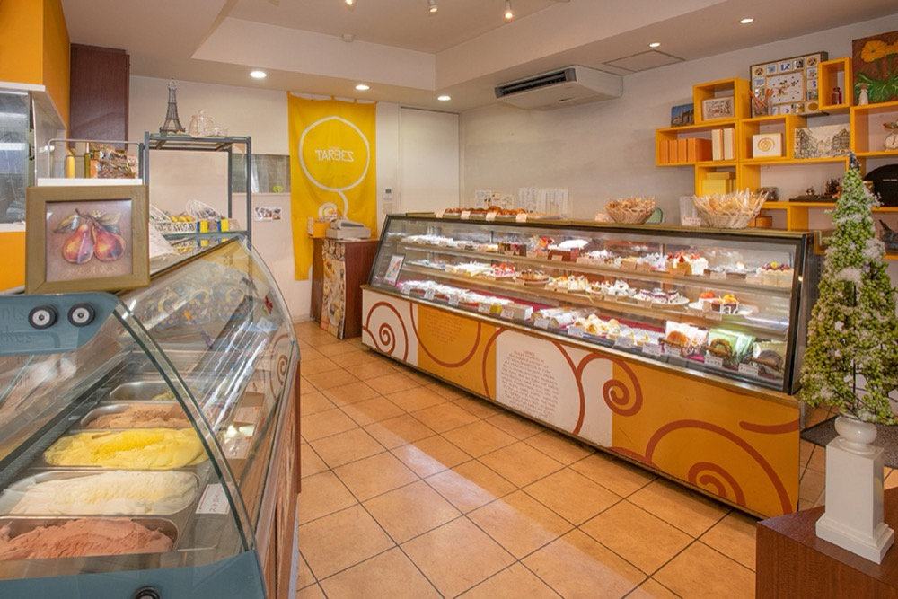

“千ブランド”認定。地元で人気の有名スイーツ店
竹見 茂雄Shigeo Takemi
株式会社タルブ 代表
茨城県出身。1991年に辻製菓専門学校を卒業後、洋菓子専門店の株式会社ミルフィーユに就職。その後1997年にフランスの老舗菓子店ロワイヤリティにて技術を磨き、1998年、株式会社シェ・シーマに入社。2004年にパティスリータルブを創業し、2010年株式会社タルブを設立。
企業サイトを見るTRACK 01
“千ブランド”認定。地元で人気の有名スイーツ店

千葉市の海浜幕張、花見川の河口近くにあるパティスリータルブは、2004年にオープンした大人気のケーキショップだ。フランス南西部の都市の名前がつけられたこのお店には、フランスの老舗菓子店ロワイヤリティで修行を重ねた代表の竹見氏によってつくられた、さまざまなスイーツが並んでいるのが特徴。各スイーツは日本人にフィットした食感や舌触りに仕上げられており、幅広い年齢の市民に親しまれている。
特にタルブの名物商品である幕張スイーツ『昆陽』は有名だ。千葉市が選定する「千葉市「食」の“千ブランド”第三回認定品」として登録されているこのスイーツは、千葉県産のさつまいもを裏ごしした餡に、クリームチーズを詰めて求肥で包んだ極上の逸品。甘さを抑えつつ、なめらかな口当たりを楽しめるため女性からの人気が高い。 「幕張スイーツ『昆陽』は、幕張新都心賑わいづくり研究会の方たちと共同開発しました。もちろん味に自信はありましたが、やはり千ブランドに認定されたと聞くまではドキドキしていましたね。」とはにかむ竹見代表に、パティスリータルブへの想いについて語ってもらった。
TRACK 02
画面越しに魅了されたパティシエの背中を追って

竹見代表がパティシエを目指すきっかけとなったのは、中学生のときにふと見ていた料理番組だった。美しいスイーツをその手でつくり上げるパティシエの姿にひどくあこがれたのだと竹見代表は語る。
辻製菓専門学校を卒業後、洋菓子専門店の株式会社ミルフィーユに就職。その後渡仏した竹見代表は、有名な老舗菓子店ロワイヤリティにて技術を磨くこととなる。「約1年という短い期間でしたが、日々の生活から毎日の食事の面、そして仕事に向かう姿勢といった、パティシエとしてのベースになる部分はすべてフランスで培いました。」と語る竹見代表。帰国後は全国でも有名な洋菓子店や老舗の和洋菓子屋で修行を重ね、夢だった京葉線の美しい海が広がる海浜幕張にパティスリータルブをオープンした。


TRACK 03
タルブならではの“こだわり”とは
たとえばケーキをつくるときになくてはならない卵は状況によって2種類使い分けている。卵ロールケーキや卵プリンなど卵の味を強調したスイーツをつくるときは、千葉県市原市の「川嶋農場」で放し飼いされた鶏から生まれる「有精卵」を使用。そしてムースやカスタードクリームといったより鮮度が求められるものをつくるときは、味そして衛生面においても優れているとされる千葉県君津市の無菌状態で育てられた鶏から生まれる「無菌卵」を使用している。
またパティスリータルブでは光触媒の浄水器を水道栓自体に取り付けているため、どこの蛇口をひねっても浄水が出る構造になっている。肌にやさしい光触媒の水は特にゼリーやコーヒーと非常に相性が良く、使用する食材の味を引き立てる。
そして、小麦や卵が食べられず誕生日ケーキを食べることができない子どもたちのためにもっと気軽に誕生日をお祝いさせてあげたいという思いから、パティスリータルブでは卵や小麦粉を使用しないケーキをつくれる体制を整えている。予約すればいつでもつくってもらえるため、特に小さい子どもがいるご家族からの注文が止まらないのだとか。